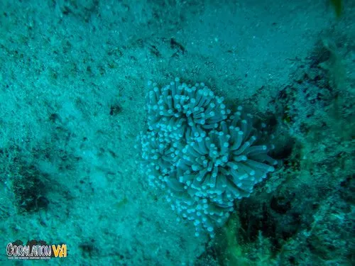

其他无脊椎动物 · 动物界
火柴头珊瑚 Euphyllia glabrescens

印度洋—太平洋珊瑚礁的枝状珊瑚，触手末端呈火柴头状，白天伸展摇曳，刺细胞较强，接触皮肤会刺痛。
- 分类
- 门刺胞动物门纲珊瑚纲目石珊瑚目科真叶珊瑚科属真叶珊瑚属
- 栖息环境
- 热带珊瑚礁的礁坡中下部、潟湖和受保护的岩壁
- 地理分布
- 印度洋—太平洋热带海域，从东非到印度尼西亚和澳大利亚
- 保护级别
- IUCN 暂无评估；CITES 附录Ⅱ
物种志
火柴头珊瑚的群体由粗短的分枝组成，每个分枝顶端伸出一条肉质触手，触手末端膨大成火柴头状，因此得名。触手呈半透明的绿色、褐色或粉红色，末端颜色较浅，群体在水中摇曳时像一片柔软的火柴。
它分布于印度洋—太平洋的珊瑚礁，常见于礁坡中下部、潟湖和受保护的岩壁，水深 0–30 米，白天触手伸展进行光合作用，夜间捕食浮游动物。触手内含有刺细胞，刺伤较强，接触皮肤会出现红肿和灼痛，处理时应戴手套。火柴头珊瑚生长较慢，因水族贸易采集和海水升温白化而数量下降，石珊瑚整体被列入 CITES 附录Ⅱ，采集和贸易需要许可。
形态与习性
- 形态分枝顶端伸出火柴头状肉质触手
- 共生与虫黄藻共生，白天触手伸展受光
- 捕食夜间捕食浮游动物
- 刺伤风险触手刺细胞可致红肿灼痛，接触需戴手套
- 水深常见于 0–30 m 的礁坡和潟湖
- 保护CITES 附录Ⅱ
趣味知识
- 火柴头珊瑚的触手末端膨大，形状像一根根点燃的火柴。
- 它的触手可以长到十几厘米，随水流摆动时非常醒目。
- 水族贸易是火柴头珊瑚面临的主要采集压力之一。